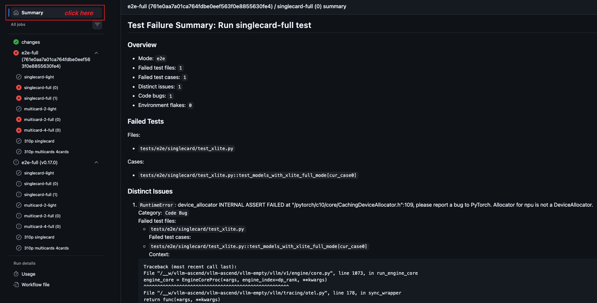

Testing
This document explains how to write unit tests, E2E tests, and nightly tests to verify your feature implementation.
Set up a test environment
The fastest way to set up a test environment is to use the main branch's container image:
You can run the unit tests on CPUs with the following steps:
cd ~/vllm-project/
# ls
# vllm vllm-ascend
# Use mirror to speed up download
# docker pull quay.nju.edu.cn/ascend/cann:|cann_image_tag|
export IMAGE=quay.io/ascend/cann:|cann_image_tag|
docker run --rm --name vllm-ascend-ut \
-v $(pwd):/vllm-project \
-v ~/.cache:/root/.cache \
-ti $IMAGE bash
# (Optional) Configure mirror to speed up download
sed -i 's|ports.ubuntu.com|mirrors.huaweicloud.com|g' /etc/apt/sources.list
pip config set global.index-url https://mirrors.huaweicloud.com/repository/pypi/simple/
# For torch-npu dev version or x86 machine
export PIP_EXTRA_INDEX_URL="https://download.pytorch.org/whl/cpu/ https://mirrors.huaweicloud.com/ascend/repos/pypi"
# src path
export SRC_WORKSPACE=/vllm-workspace
mkdir -p $SRC_WORKSPACE
apt-get update -y
apt-get install -y python3-pip git vim wget net-tools gcc g++ cmake libnuma-dev curl gnupg2
git clone -b |vllm_ascend_version| --depth 1 https://github.com/vllm-project/vllm-ascend.git
git clone --depth 1 https://github.com/vllm-project/vllm.git
# vllm
cd $SRC_WORKSPACE/vllm
VLLM_TARGET_DEVICE=empty python3 -m pip install .
python3 -m pip uninstall -y triton
# vllm-ascend
cd $SRC_WORKSPACE/vllm-ascend
export LD_LIBRARY_PATH=$LD_LIBRARY_PATH:/usr/local/Ascend/ascend-toolkit/latest/$(uname -m)-linux/devlib
# For cpu environment, set SOC_VERSION for different chips.
# See https://github.com/vllm-project/vllm-ascend/blob/3cb0af0bcf3299089ca7e72159fa36e825a470f8/setup.py#L132 for detail.
export SOC_VERSION="ascend910b1"
python3 -m pip install -v .
python3 -m pip install -r requirements-dev.txt
# Update DEVICE according to your device (/dev/davinci[0-7])
export DEVICE=/dev/davinci0
# Update the vllm-ascend image
export IMAGE=quay.io/ascend/vllm-ascend:main
docker run --rm \
--name vllm-ascend \
--shm-size=1g \
--device $DEVICE \
--device /dev/davinci_manager \
--device /dev/devmm_svm \
--device /dev/hisi_hdc \
-v /usr/local/dcmi:/usr/local/dcmi \
-v /usr/local/bin/npu-smi:/usr/local/bin/npu-smi \
-v /usr/local/Ascend/driver/lib64/:/usr/local/Ascend/driver/lib64/ \
-v /usr/local/Ascend/driver/version.info:/usr/local/Ascend/driver/version.info \
-v /etc/ascend_install.info:/etc/ascend_install.info \
-v /root/.cache:/root/.cache \
-p 8000:8000 \
-it $IMAGE bash
After starting the container, you should install the required packages:
# Prepare
pip config set global.index-url https://mirrors.tuna.tsinghua.edu.cn/pypi/web/simple
# Install required packages
pip install -r requirements-dev.txt
# Update the vllm-ascend image
export IMAGE=quay.io/ascend/vllm-ascend:main
docker run --rm \
--name vllm-ascend \
--shm-size=1g \
--device /dev/davinci0 \
--device /dev/davinci1 \
--device /dev/davinci2 \
--device /dev/davinci3 \
--device /dev/davinci_manager \
--device /dev/devmm_svm \
--device /dev/hisi_hdc \
-v /usr/local/dcmi:/usr/local/dcmi \
-v /usr/local/bin/npu-smi:/usr/local/bin/npu-smi \
-v /usr/local/Ascend/driver/lib64/:/usr/local/Ascend/driver/lib64/ \
-v /usr/local/Ascend/driver/version.info:/usr/local/Ascend/driver/version.info \
-v /etc/ascend_install.info:/etc/ascend_install.info \
-v /root/.cache:/root/.cache \
-p 8000:8000 \
-it $IMAGE bash
After starting the container, you should install the required packages:
cd /vllm-workspace/vllm-ascend/
# Prepare
pip config set global.index-url https://mirrors.tuna.tsinghua.edu.cn/pypi/web/simple
# Install required packages
pip install -r requirements-dev.txt
Running tests
Unit tests
There are several principles to follow when writing unit tests:
The test file path should be consistent with the source file and start with the
test_prefix, such as:vllm_ascend/worker/worker.py-->tests/ut/worker/test_worker.pyThe vLLM Ascend test uses unittest framework. See the Python unittest documentation to understand how to write unit tests.
All unit tests can be run on CPUs, so you must mock the device-related functions on the host.
Example: tests/ut/test_ascend_config.py.
You can run the unit tests using
pytest:
# Run unit tests
export LD_LIBRARY_PATH=$LD_LIBRARY_PATH:/usr/local/Ascend/ascend-toolkit/latest/$(uname -m)-linux/devlib
TORCH_DEVICE_BACKEND_AUTOLOAD=0 pytest -sv tests/ut
cd /vllm-workspace/vllm-ascend/
# Run all single-card tests
pytest -sv tests/ut
# Run single test
pytest -sv tests/ut/test_ascend_config.py
cd /vllm-workspace/vllm-ascend/
# Run all multi-card tests
pytest -sv tests/ut
# Run single test
pytest -sv tests/ut/test_ascend_config.py
E2E test
Although vllm-ascend CI provides E2E tests on Ascend CI (for example, schedule_nightly_test_a2.yaml, schedule_nightly_test_a3.yaml, pr_test_full.yaml), you can run them locally.
PR-triggered E2E test
You can run tests with pytest as well. Typical examples:
You can't run the E2E test on CPUs.
cd /vllm-workspace/vllm-ascend/
# Run all single-card tests
VLLM_USE_MODELSCOPE=true pytest -sv tests/e2e/singlecard/
# Run a certain test script
VLLM_USE_MODELSCOPE=true pytest -sv tests/e2e/singlecard/test_camem.py
# Run a certain case in test script
VLLM_USE_MODELSCOPE=true pytest -sv tests/e2e/singlecard/test_camem.py::test_end_to_end
cd /vllm-workspace/vllm-ascend/
# Run all multi-card tests
VLLM_USE_MODELSCOPE=true pytest -sv tests/e2e/multicard/2-cards/
# Run a certain test script
VLLM_USE_MODELSCOPE=true pytest -sv tests/e2e/multicard/2-cards/test_qwen3_moe.py
# Run a certain case in test script
VLLM_USE_MODELSCOPE=true pytest -sv tests/e2e/multicard/2-cards/test_qwen3_moe.py::test_qwen3_moe_distributed_mp_tp2_ep
This will reproduce the E2E test behavior.
Nightly-triggered E2E test
You can run tests with pytest as well. Typical examples:
You can't run the E2E test on CPUs.
cd /vllm-workspace/vllm-ascend/
# run all single-card op tests
VLLM_USE_MODELSCOPE=true pytest -sv tests/e2e/nightly/single_node/ops/singlecard_ops/
cd /vllm-workspace/vllm-ascend/
# run all multi-card op tests on A2
VLLM_USE_MODELSCOPE=true pytest -sv tests/e2e/nightly/single_node/ops/multicard_ops_a2/
# run all multi-card op tests on A3
VLLM_USE_MODELSCOPE=true pytest -sv tests/e2e/nightly/single_node/ops/multicard_ops_a3/
For running nightly single-node model test cases locally, refer to the following example.
export CONFIG_YAML_PATH=Qwen3-32B.yaml
VLLM_USE_MODELSCOPE=true pytest -sv tests/e2e/nightly/single_node/models/scripts/test_single_node.py
For running nightly multi-node model test cases locally, refer to the Running Locally section in Multi Node Test.
E2E test examples
Offline test example:
tests/e2e/singlecard/test_camem.pyOnline test example:
tests/e2e/multicard/2-cards/test_single_request_aclgraph.pyCorrectness test example:
tests/e2e/singlecard/test_aclgraph_accuracy.py
The CI resource is limited, and you might need to reduce the number of layers of a model. Below is an example of how to generate a reduced layer model:
Fork the original model repo in modelscope. All the files in the repo except for weights are required.
Set
num_hidden_layersto the expected number of layers, e.g.,{"num_hidden_layers": 2,}Copy the following python script as
generate_random_weight.py. Set the relevant parametersMODEL_LOCAL_PATH,DIST_DTYPEandDIST_MODEL_PATHas needed:import torch from transformers import AutoTokenizer, AutoConfig from modeling_deepseek import DeepseekV3ForCausalLM from modelscope import snapshot_download MODEL_LOCAL_PATH = "~/.cache/modelscope/models/vllm-ascend/DeepSeek-V3-Pruning" DIST_DTYPE = torch.bfloat16 DIST_MODEL_PATH = "./random_deepseek_v3_with_2_hidden_layer" config = AutoConfig.from_pretrained(MODEL_LOCAL_PATH, trust_remote_code=True) model = DeepseekV3ForCausalLM(config) model = model.to(DIST_DTYPE) model.save_pretrained(DIST_MODEL_PATH)
View CI log summary in GitHub Actions
After a CI job finishes, you can open the corresponding GitHub Actions job page and check the
Summary tab to view the generated CI log summary.

The summary is intended to help developers triage failures more quickly. It may include:
failed test files
failed test cases
distinct root-cause errors
short error context extracted from the job log
This summary is generated from the job log by
/.github/workflows/scripts/ci_log_summary.py for unit-test and e2e workflows.
Run doctest
vllm-ascend provides a vllm-ascend/tests/e2e/run_doctests.sh command to run all doctests in the doc files.
The doctest is a good way to make sure docs stay current and examples remain executable, which can be run locally as follows:
# Run doctest
/vllm-workspace/vllm-ascend/tests/e2e/run_doctests.sh
This will reproduce the same environment as the CI. See labeled_doctest.yaml.